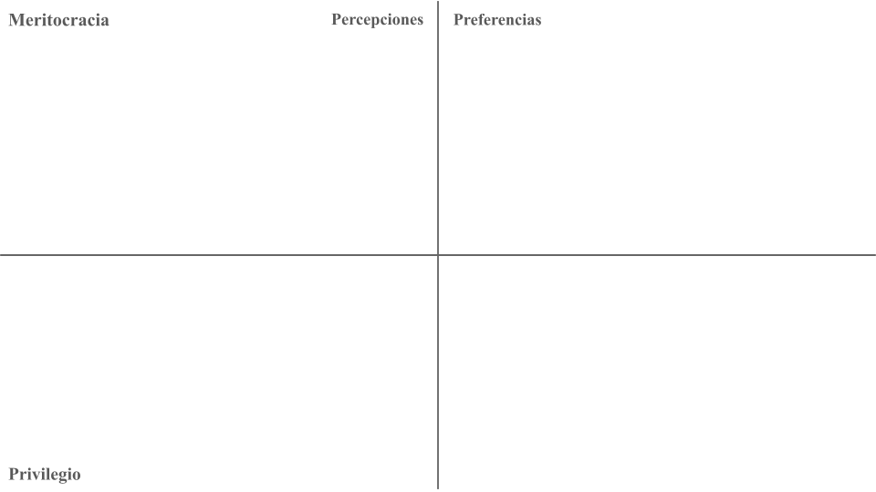
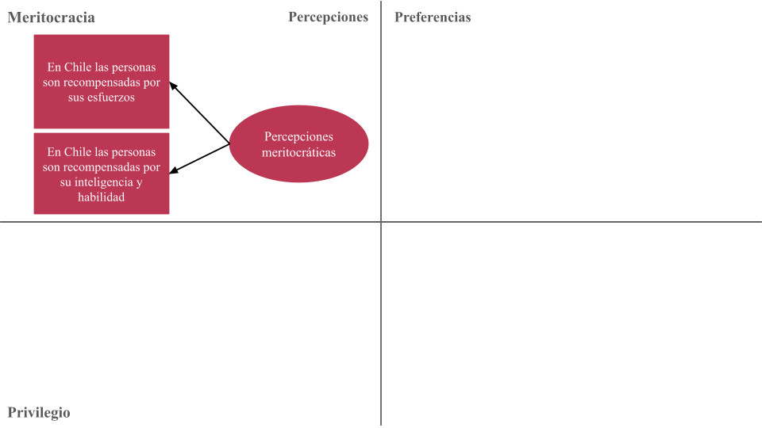
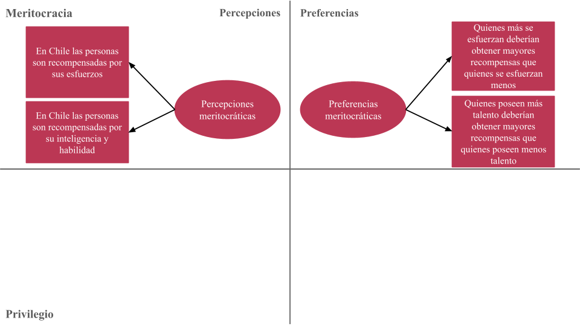
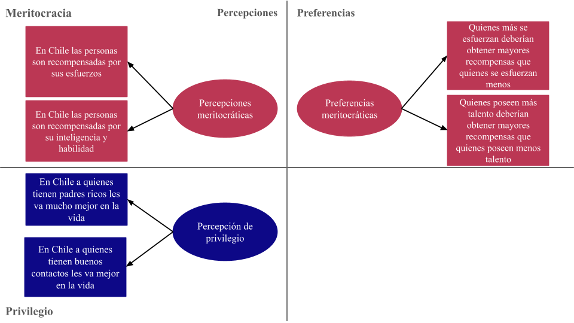
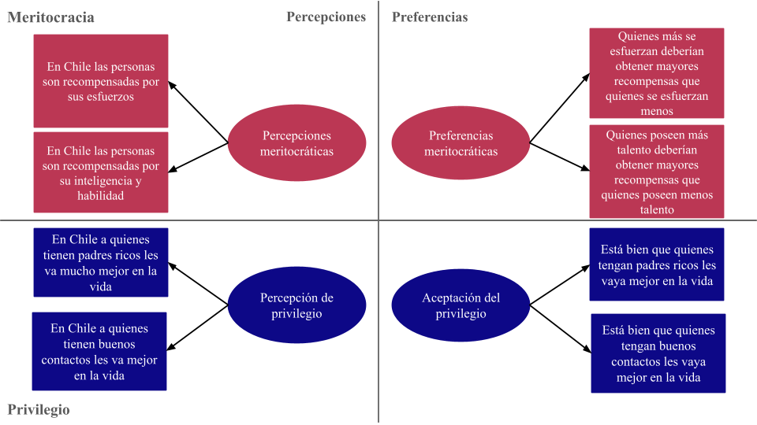
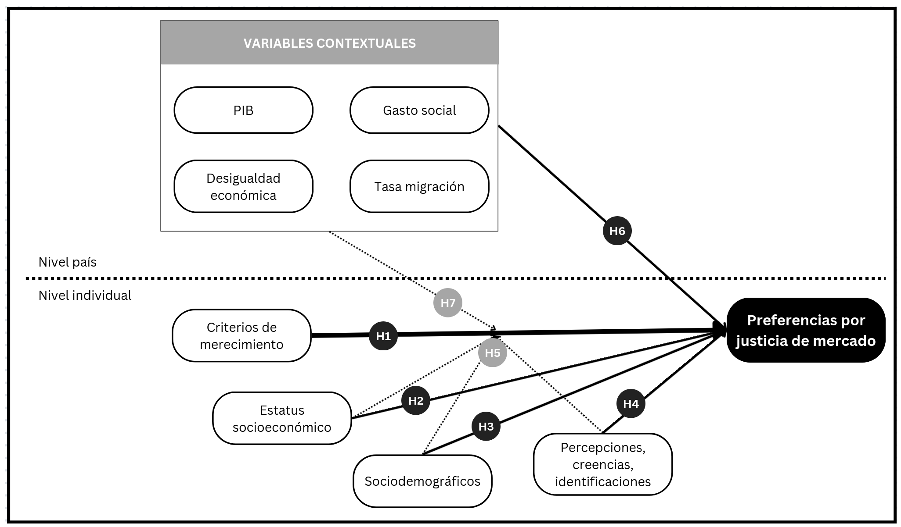
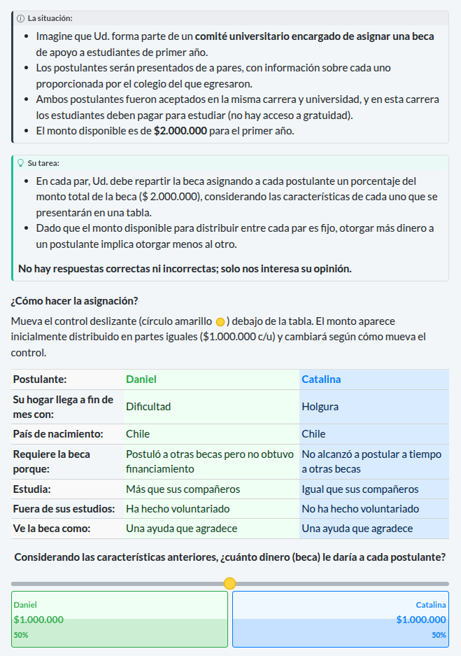

Presentación del proyecto
Reunión con ayudantes y seminaristas
IP: Juan Carlos Castillo
AI: Tomás Urzúa
Departamento de Sociología, UCH
Reunión ayudantes y seminaristas
06 de Agosto - 2026
Contexto
Proyecto
ANID/FONDECYT N°1250518 2025-2028 - Justicia de mercado y merecimiento del bienestar social
Primera etapa:
- Estudios con datos secundarios comparados y nacionales
- Encuesta “Mercado, merecimiento y mérito”
Segunda etapa:
- Estudios con análisis de experimento de encuesta
- Análisis discusiones legislativas pensiones
Más información: jus-mer.com
Contexto
- Privatización y mercantilización de bienes públicos, políticas de bienestar y servicios sociales (Gingrich, 2011; Streeck, 2016)
- Cambios en la arquitectura de las instituciones del bienestar social; expansión del mercado (Busemeyer & Iversen, 2020; Ferre, 2023)
- Este orden económico se refleja en una economía moral específica/policy-feedback effects (Campbell, 2020; Fernandez & Jaime-Castillo, 2013; Mau, 2015)
Preferencias por justicia de mercado (Castillo et al., 2025; Koos & Sachweh, 2019; Lindh, 2015)
privatización de bienes públicos -> transformación en la arquitectura de las instituciones de bienestar social (alternativa pública/privada) -> orden social refleja una economía moral (policy feedback effects) -> preferencias por justicia de mercado (adherencia a que los criterios de mercado operen para la asignación de recursos)
Contexto chileno
- Profunda privatización y comodificación de áreas de reproducción social con fuerte dependencia Estatal (Boccardo, 2020; Madariaga, 2020)
- Crecimiento con elevada desigualdad y bajo gasto social (Flores et al., 2020; Llorca-Jaña & Miller, 2021)
- Malestar por desigualdad en acceso y provisión de servicios sociales (PNUD, 2017), y conflictividad social (Somma et al., 2021) y
- Consecuencias del neoliberalismo en las subjetividades (Araujo, 2019; Canales Cerón et al., 2021)
subvención -> crecimiento económico sin retorno social, expresado en la baja inversión pública -> malestar social generalizado (desiguales), expresado en demandas específicas como el movimiento no + AFP, así como en otras más generales como el estallido social de 2019 -> descomposición del tejido social reflejado en una alta individualización, lo que ha afectado las preferencias redistributivas de la población
Comodificación de servicios en Chile
Pensiones: un sistema de capitalización individual obligatoria gestionado por fondos de pensiones privados (AFP) (Superintendencia, 2025)
Salud: un sistema dual de seguros públicos y privados, en el que el sistema público (FONASA) da cobertura al 70 % de la población (Superintendencia, 2025)
Educación: un triple sistema estratificado compuesto por centros públicos, privados subvencionados y privados, con importantes disparidades en cuanto a calidad y acceso (Valenzuela et al., 2013)
Este proyecto
Abordar sistemáticamente las preferencias por criterios de mercado en salud, pensiones y educación, sus determinantes y cómo han cambiado en el tiempo en Chile
Las preferencias por justicia de mercado se asocian a criterios de merecimiento fuertemente arraigados en la población
Objetivo: Analizar en Chile (y en perspectiva comparada) el nivel y la evolución de las preferencias por justicia de mercado en las últimas dos décadas y su vínculo con criterios de merecimiento del bienestar
Argumento: El alto grado de comodificación del bienestar en Chile habría reforzado normas meritocráticas (especialmente el énfasis en el esfuerzo), elevando el apoyo a la justicia de mercado frente a países con menor comodificación
Objetivos específicos
Analizar la asociación entre criterios de merecimiento y preferencias por justicia de mercado
Estimar en qué medida el estatus socioeconómico se vincula con dichas preferencias
Examinar el efecto de variables socio-estructurales (edad, género) sobre esas preferencias
Indagar cómo percepciones/creencias sobre la desigualdad se asocian a la justicia de mercado
Evaluar el rol moderador de estatus (objetivo y subjetivo) y factores socio-estructurales en la relación merecimiento → justicia de mercado
Analizar la asociación entre desigualdad contextual a nivel país y preferencias por justicia de mercado
Explorar el rol moderador de factores contextuales de país en la relación merecimiento → justicia de mercado
Conceptos centrales
Preferencias por justicia de mercado
Lane (1986): market justice vs. political justice
“Bringing the market in” (Lindh & McCall, 2023)
Creencias normativas que legitiman la idea de que el acceso a los servicios sociales esenciales —como la salud, la educación o las pensiones— debe determinarse según criterios basados en el mercado (Lindh, 2015, p. 895)
Medición: evaluar si las personas consideran justo que el acceso a dichos servicios dependa de los ingresos (Castillo et al., 2025; Kluegel et al., 1999; Lindh, 2015)
se contraponen dos conceptos, donde a grosso modo
political justice aborda la redistribución de recursos apelando a criterios de igualdad, mientras que market justice defiende la asignación de recursos según criterios de mercado. Específicamente, market justice refiere a…
Preferencias por justicia de mercado
Contextual
- Gasto social (Busemeyer & Iversen, 2020; Immergut & Schneider, 2020)
- Desigualdad económica (Koos & Sachweh, 2019)
- Nivel de privatización de servicios y regulación del mercado (Koos & Sachweh, 2019; Lindh, 2015)
Individual
- Estatus socioeconómico -ingresos, educación y ocupación- Otero & Mendoza (2024)
- Percepciones sobre la desigualdad y meritocracia (Castillo et al., 2025; Castillo et al., 2024)
- Conservadurismo/liberalismo económico (Lee & Stacey, 2024)
Merecimiento
Merecimiento en bienestar: La universalidad no es la norma; el acceso suele ser condicional según quién “merece” qué y por qué
Evaluaciones que las personas realizan sobre si ciertos beneficios, castigos o reconocimientos son justamente merecidos o no (Oorschot, 2000)
Marco CARIN/NICER: Cinco criterios para juzgar merecimiento: Control, Actitud, Reciprocidad, Identidad y Necesidad
Primacía del control/mérito: La responsabilidad individual (esfuerzo) suele pesar más que la necesidad o la reciprocidad al decidir quién merece apoyo
Implicación del proyecto: Evaluar cómo estos criterios —en especial control/mérito— se asocian con preferencias por la justicia de mercado
Meritocracia
Mérito = talento + esfuerzo (Young, 1958)
Puede entenderse como un criterio en términos de merecimiento de bienes sociales
Creer en la meritocracia se ha asociado con la tolerancia y la aceptación de la desigualdad (Mijs, 2021; Sandel, 2020)
Sostenemos que las creencias meritocráticas son un factor determinante de las preferencias por la justicia de mercado, ya que proporcionan una justificación moral para la distribución desigual de los recursos y las oportunidades en la sociedad
Pero, ¿qué son las creencias meritocráticas?
Marco multidimensional de meritocracia

Marco multidimensional de meritocracia

Marco multidimensional de meritocracia

Marco multidimensional de meritocracia

Marco multidimensional de meritocracia

Marco multidimensional de meritocracia
Hipótesis

Contribución y proyecciones
- Aproximación conceptual a la justicia de mercado desde el contexto chileno
- Analizar empíricamente las preferencias por justicia de mercado/mercantilización del bienestar en Chile desde la opinión pública mediante encuestas
- Efectos normativos de las instituciones del bienestar debido a la privatización y mercantilización y su relación con el merecimiento
- Posicionarse como una plataforma de investigación y difusión sobre justicia distributiva en Chile, en colaboración con otros centros, proyectos e investigadores (nacionales e internacionales)
Artículos publicados
Castillo, J. C., Iturra, J., Maldonado, L., Atria, J., & Meneses, F. (2023). A Multidimensional Approach for Measuring Meritocratic Beliefs: Advantages, Limitations and Alternatives to the ISSP Social Inequality Survey. International Journal of Sociology, 53(6), 448–472. https://doi.org/10.1080/00207659.2023.2241875
Castillo, J. C., Salgado, M., Carrasco, K., & Laffert, A. (2024). The Socialization of Meritocracy and Market Justice Preferences at School. Societies, 14(11), 214. doi.org/10.3390/soc14110214
Castillo, J. C., Laffert, A., Carrasco, K., & Iturra-Sanhueza, J. (2025). Perceptions of inequality and meritocracy: their interplay in shaping preferences for market justice in Chile (2016–2023). Frontiers in Sociology, 10, 1634219. https://doi.org/10.3389/fsoc.2025.1634219
Castillo, Juan Carlos; Iturra, Julio & Carrasco, Kevin (2025). Changes in the Justification of Educational Inequalities: The Role of Perceptions of Inequality and Meritocracy During the COVID Pandemic. Social Justice Research, 38(3) 240–263 https://doi.org/10.1007/s11211-025-00458-0
Castillo, J. C., Canales Sellés, R., Laffert, A., & Urzúa, T. (2026). Justification trajectories for pension inequality in Chile (2016–2023): the role of social class and beliefs in meritocracy. Frontiers in Sociology, 11, 1771856. https://doi.org/10.3389/fsoc.2026.1771856
En camino
Stability and comparability of meritocratic beliefs in school-age students: A measurement invariance approach across time and cohorts. Andreas Laffert, Juan Carlos Castillo, René Canales, Tomás Urzúa & Kevin Carrasco. Submited.
Market justice and meritocracy: A structural equation modeling approach. Andreas Laffert, Tomás Urzúa, Juan Carlos Castillo & René Canales.
Inequality and deservingness in higher education in Chile. A conjoint survey experiment. Juan Carlos Castillo, Andreas Laffert, René Canales & Tomás Urzúa.
Presentaciones
Cambios En Las Creencias Sobre Meritocracia y Justicia de Mercado En El Contexto Escolar Chileno (2025). Castillo, Juan Carlos; Carrasco, Kevin; Laffert, Andreas & Nunez, Maria Fernanda. VIII Seminario Internacional Desigualdad y Movilidad Social En América Latina, Brasil
Creencias en la meritocracia en la etapa escolar: Conceptos, medición e invarianza (2025). Laffert, Andreas; Castillo, Juan Carlos; Canales-Selles, Rene; Urzúa, Tomás & Carrasco, Kevin. XII International Conference COES, Chile
Justification Trajectories for Pension Inequality in Chile (2016-2023): The Role of Social Class and Beliefs in Meritocracy (2026). Castillo, Juan Carlos; Canales, Rene; Laffert, Andreas & Urzúa, Tomás. InEquality Conference. Panel 17: Meritocracy and Inequality Beliefs, Universität Konstanz, Germany
Market justice, meritocracy and deservingness: Agenda and work in progress (2026). Castillo, Juan Carlos; Laffert, Andreas & Urzúa, Tomás. Freie Universität Berlin, Germany.
Preferences for Market-Based Welfare: Disentangling the Role of Merit and Privilege Beliefs in Chile (2026). Laffert, Andreas; Castillo, Juan Carlos; Canales-Selles, Rene & Urzúa, Tomás. WARN Online Workshop: Methods in Welfare Attitudes Research
Más presentaciones en la página web del proyecto
Proyectos en desarrollo
Diseño encuesta Mercado, merecimiento y mérito
Diseño encuesta
Objetivo: contar con datos y mediciones de calidad de los constructos relevantes para los estudios del proyecto
Diseño:
- Encuesta web transveral
- Administración de entrevistas CAWI
- Construida con surveydown
- Muestreo por cuotas (sexo, edad y nivel socioeconómico)
- N \(\approx\) 3.000 casos
- Cuestionario de \(\approx\) 15 minutos
Conjoint
¿Qué es un conjoint?
Experimento factorial que presenta perfiles construidos con múltiples atributos que varían simultáneamente (Hainmueller et al., 2014)
Los encuestados evalúan perfiles (eligen o califican)
Identificar qué atributos se consideran más relevantes cuando la decisión exige ponderar múltiples criterios simultáneamente (Bansak et al., 2021b; Hainmueller et al., 2014)
Diseñado para estudiar preferencias multidimensionales con trade-offs reales (Bansak et al., 2021a)
Objetivos del conjoint
Evaluar cómo criterios de merecimiento y de desigualdad afectan la asignación de becas para la financiar el primer año de educación superior en Chile
Merecimiento (CARIN/NICER): el acceso al bienestar es condicional según si las personas “merecen” beneficios (Control, Actitud, Reciprocidad, Identidad, Esfuerzo y Necesidad) (Meuleman et al., 2020; Oorschot, 2000)

Sobre ustedes
- ¿Cuáles son sus intereses de investigación?
- ¿Cuáles son sus expectativas al formar parte del proyecto?
Gracias por su atención!
Página web del proyecto: https://jus-mer.com
Github del proyecto: https://github.com/jus-mer